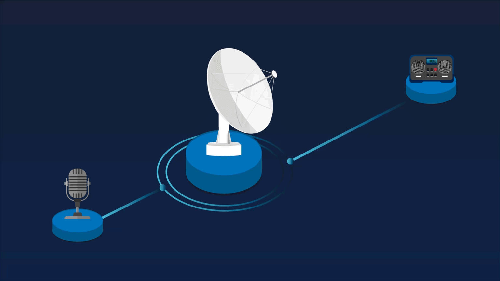

Comencemos el estudio de este documento identificando qué es una red de telecomunicaciones, cuál es su propósito y algunas limitaciones de las redes actuales.
1.1. Definición
Una red de comunicaciones es el conjunto de elementos encargados de la transmisión, recepción y procesamiento de información entre dos o más lugares, mediante circuitos electrónicos que generan ondas electromagnéticas o partículas de luz.
Veamos, en la siguiente figura cuáles son los componentes del sistema:
Este sistema puede ser unidireccional o bidireccional, así:
Unidireccional
Cuando es unidireccional solo se envía información del operador al cliente, por ejemplo, la radio difusión o la televisión por cable.
1.2. Propósito general de un sistema de comunicaciones: más capacidad de transmitir información a mayor distancia (ancho de banda - distancia)
Una de las características importantes de las redes de telecomunicaciones es la relación ancho de banda y distancia, que se expresa en Mb/s ó Gb/s y Km respectivamente. Esta relación indica la capacidad de transmitir información y la distancia a la que el sistema de comunicación puede lograrlo. De hecho, las redes ópticas reciben su nombre de acuerdo con esta relación, teniendo cada una de ellas sus propios retos, equipos y procesamiento. Revisa esto en la gráfica e identifica los tipos de redes.
1.3. Limitaciones de las redes actuales usadas en la última milla
La red de acceso, también conocida como última milla, hace referencia al último trayecto de la red de telecomunicaciones necesario para entregar los servicios a los clientes, las redes de cobre y redes hibridas como HFC son el objetivo a sustituir ya que sus bajas capacidades de transmisión de datos y altos costos de mantenimiento suponen una barrera en el desarrollo de nuevos servicios de telecom.
En ese sentido, siendo la red de cara a los clientes, las limitaciones más relevantes son:
- Baja capacidad en el transporte de información, se convierte en un cuello de botella ante el constante incremento de demanda por ancho de banda, requerido para la oferta de nuevos servicios y aplicaciones, que requieren cada vez más velocidad y menos latencia.
- Algunas de estas redes tienen altas pérdidas por atenuación y están expuestas a inducciones electromagnéticas.
- Algunas de estas redes son de medio compartido (varios clientes conectados a la misma red), por lo cual son percibidas con desconfianza por parte de los clientes.
es un segmento de alto costo, debido a que requieren mantenimiento más periódico de los equipos y elementos puestos en la casa del cliente.
FTTx (Fiber To The x…) es una expresión genérica utilizada en telecomunicaciones para designar arquitecturas de red basadas en fibra óptica, donde la “x” es una variable que se reemplaza por una letra que está en relación con el punto hasta donde llega el extremo de la red de fibra óptica.
FTTN:
Fibra al nodo (Fiber To The Node). Esta red se caracteriza por llegar hasta un armario de distribución y la terminación de la red es con cable de cobre soportado con tecnología xDSL hasta la residencia. La longitud de esta red es de 1,5 a 3 km del cliente.
Siguiendo la misma nomenclatura, se tienen las siguientes redes:
- FTTO (fibra a la oficina)
- FTTM (fibra a la máquina)
- FTTP (fibra a las premisas)
De estas configuraciones FTTx, el enfoque principal de este curso es hacia redes FTTH, es decir, aquellas que llegan a las casas de los clientes. Por ello, a continuación se detallará esta red desde sus estándares y elementos constitutivos, y podremos ver por qué tienen el auge actual y solucionan muchos de los limitantes de la red de acceso.
3.1. Introducción
Actualmente se evidencia una creciente demanda en el ancho de banda de los accesos a Internet de los clientes residenciales. Si bien los servicios móviles celulares han crecido en forma exponencial, igualmente están presentes los accesos a Internet que se basan en tecnologías cableadas en cobre como son las soluciones xDSL y las redes híbrido fibra coaxial-HFC- DOCSIS.
Estas tecnologías presentan límites técnicos por interferencias, distancia y ancho de banda. En contraposición, las redes de fibra al hogar (FTTH) son de altas velocidades de transmisión, inmunes a interferencias electromagnéticas, no presentan oxidación y, siendo en general muy estables, presentan bajos costos para el operador. Por ello, en casi todos los mercados actuales se está instalando en forma masiva soluciones FTTH.
FTTH viene en dos formas:
Red Óptica Pasiva (PON)
Entre la central del operador y la casa del cliente solo hay elementos pasivos, que dejan pasar la señal de luz y pueden dividirla para distribuirla entre los clientes. Por costos y facilidad de operación, la industria ha optado por las redes ópticas pasivas PON y serán la estudiadas en lo que sigue del curso.
La red PON se caracteriza por usar el medio de transmisión compartido desde el operador hacia los clientes, es decir, todas las comunicaciones son enviadas por un único medio desde la central del operador y se divide para llegar a cada predio. En el sentido de las casas al operador, se debe arbitrar el retorno para usar el medio, controlando el acceso al medio (MAC por sus siglas en inglés).
FTTH Dedicado
Se refiere a una red óptica punto a punto, en la cual cada residencia tiene un hilo de fibra dedicado hacia el operador y que es compartido solo por los dispositivos del hogar.
En estas redes puede existir procesamiento en la red de distribución, de tal forma que se entrega información única para cada usuario a través de un switch. En este caso es una red FTTH en estrella activa. Esta configuración activa ofrece mucha flexibilidad y ancho de banda, pero a un mayor costo.
3.2. Estándares de redes PON
Para permitir interoperabilidad y multiplicidad de proveedores de equipos, en beneficio de la industria, estas redes han sido estandarizadas por dos organismos principalmente: la ITU (International Telecommunication Union) y la IEEE (Institute of Electrical and Electronics Engineers). Aunque con algunas diferencias, principalmente en los protocolos, tratan de ser muy similares en los elementos físicos de la red.
En la tabla se presentan las principales características de ambos estándares.
| BPON | GPON | EPON | |
|---|---|---|---|
| Standard | ITU-T G.983 | ITU-T G.984 | IEEE 802.3ah (1 Gb/s) IEEE 802.3av (10Gb/s) |
| Tasa de transmisión de bajada | 622 Mb/s | 2,5 Gb/s | 1,25 Gb/s, 10 Gb/s |
| Tasa de transmisión de subida de datos | 155 Mb/s | 1,25 Gb/s | 1,25 Gb/s, 10 Gb/s |
| Longitud de onda de bajada en nm | 1490, 1550 | 1490 | 1490, 1550 |
| Longitud de onda de subida en nm | 1310 | 1310 | 1310 |
| Protocolo | ATM | Ethernet sobre ATM/IP o TDM | Ethernet |
| Video | RF en 1550 ó IP en 1490 | RF en 1550 ó IP en 1490 | IP Video |
| Max división en la PON | 32 | 64 | 16 |
| Potencia del transmisor | 1-4 dBm | OLT: ~0 a +6 dBm, ONT: ~ -4 a +2 dBm | |
| Presupuesto de Potencia | ~13dB (min) a 28dB (máx.) con /32 divisiones | ~13dB (min) a 28dB (máx.) con /32 divisiones | |
| Cobertura | <20 km | <60 km | <20 km |
Documento: ITU-T PON standards - progress and recent activities
Duración: 18 páginas
Enunciado: para saber cómo han avanzado estas redes, puedes visitar la página y abordar los contenidos que allí se presentan. La lectura de esta temática es opcional y complementa tu estudio.
3.3. Composición
Las redes FTTH están constituidas básicamente por tres elementos: OLT, ODN y ONT. Acá se dará una breve descripción, pero se mostrarán en detalle en la visita a las distintas partes que conforman la red PON.
Vamos a entrar en detalles de los distintos elementos que componen una red GPON. Para ello retomemos la gráfica de su esquema general y hagamos una revisión más específica de las instalaciones de la oficina central del operador, los cables y las instalaciones en los predios de los clientes. Veamos que aunque tenemos 3 partes principales, sin una serie de elementos que proporcionan la ruta para las señales de luz, sería imposible establecer la conectividad.
Oficina central (Central Office-Co), cabecera (Head End)
Una oficina central o cabecera, y actualmente se puede incluir en esta categoría a los data center, es el sitio donde se procesan las señales que se van a transmitir a través de la red. En ella se encuentra el OLT (terminal de línea óptica) y las fibras ópticas junto con los elementos para organizarlas, que interconectan el OLT con la red alimentadora o feeder.
Como vemos en este esquema, el OLT (ubicado en la oficina central) es uno de los extremos de la red que se conecta con la ODN, la red en fibra óptica de exterior (que conecta los extremos de la red), para llegar finalmente hasta los ONT.
Los distintos elementos que están en una oficina central, y que se detallan a continuación, son:
- Bastidores y racks
- Bandejas de fibra óptica
- Paneles de interconexión
- Conectores y cables de interconexión
- Cajas de distribución de fibra óptica – ODF
- OLT
OLT (Optical Line Terminal)
La terminación de línea óptica tiene como función principal controlar, desde la oficina central, la información transmitida en ambas direcciones. Para ello cumple funciones como identificar, aprovisionar y hacer las veces de transceptor (transmite y recibe señales ópticas).
Tasa de transmisión GPON: envía información a 2,48 Gbps por puerto y son compartidos por todos los usuarios conectados a la OLT.
Tasa de recepción: recibe información de la ONT a 1,24 Gbps.
Para el control de la información, el OLT integra varias funciones. Dentro de sus funciones básicas está:
- Identifica pertenencia a la red mediante el ID de la ONT.
- Pasada la identificación, entrega los servicios al cliente, lo que se denomina aprovisionamiento.
- Cumple funciones de transmisión y recepción óptica.
- Cumple funciones de control en la red de distribución, tal como control de la potencia transmitida desde la residencia a la oficina central.
- Implementa corrección de errores y procesos en la información para mejorar su tolerancia a fallas. Igualmente, maneja el protocolo de acceso al medio (MAC) para arbitrar el ancho de banda del camino de retorno.
- Hace el acople entre la red de transporte bajo protocolo ATM con la red de distribución ODN.
Bastidor OLT: tiene tres partes principales: las placas OLT, las tarjetas de control y alimentación de potencia, y la interfaz con la red de transporte. En la figura se observa un bastidor que tiene 16 placas OLT, cada placa tiene 8 puertos y cada puerto puede atender máximo 128 usuarios, para un total de 16384 usuarios (16x8x128).
Cableado para la interconexión de los puertos OLT con la ODN
Para conectar los puertos OLT con la red de distribución ODN se hace necesario un cableado interno en la oficina central, el cual se organiza en un distribuidor general de fibras ópticas (ODF) compuesto por: bastidores, racks, bandejas y fibras individuales llamadas patch cord. Veamos en qué consisten:
Bastidores o racks de fibra óptica
Básicamente es un armario o estante metálico, cuya finalidad principal es la de albergar los paneles de interconexión de fibras. En sus laterales posee guías para organización de las fibras.
Usualmente son de longitudes de unos pocos metros, los suficientes para la interconexión interna de los equipos con la red externa. Son delicados y deben instalarse de manera ordenada de extremo a extremo. Los radios de curvatura reducidos generan atenuaciones adicionales que pueden provocar interrupciones del servicio.
Dentro de estos bastidores, podemos enfocarnos ahora en sus elementos constitutivos principales.
Paneles de interconexión o patch panel instalados en los racks
Son unas bandejas que permiten la administración y conexión de cada puerto de fibra de manera independiente. Los conectores de fibra óptica que hacen parte de estos paneles son tipo hembra, como se observa en la figura.
La característica principal de los paneles es su modularidad. Permiten la conexión de varios puertos de terminal de fibra y los más comunes son de 24 y 48 fibras ópticas o patch cords. Para que las fibras sean instaladas en los paneles deben terminar en conector tipo macho.
Ahora veamos un detalle de estos conectores y de los patch cord que están en el interior de los patch panel.
Conectores y cables de interconexión:
Están conformados por el conector y un segmento de fibra óptica. El conector es tipo macho y se ajusta perfectamente al conector hembra del patch panel.
Bandejas o escalerillas portacables
Todos los cables individuales de fibra deberán llevarse luego, por bandejas portacables, hacia una caja de empalme para interconectarlos con un cable multifibra de la red alimentadora que hace parte de la red externa u ODN.
Normalmente se instalan a 2,5 m de altura para evitar que el personal alcance los cables. Estas bandejas tienen una gran resistencia mecánica; cuando se trate de bandejas metálicas deben aterrizarse a la malla a tierra de la oficina central. Hay que considerar la carga de trabajo para evitar que la bandeja colapse (no usar cualquier soporte). La carga de trabajo es especificada por el fabricante de la bandeja.

ODN (Optical Distribution Network)
Es la red de fibra óptica (pasiva) externa a la oficina central y todos sus componentes asociados como divisores (splitters), conectores y cables de fibra óptica, entre otros, que constituyen una zona denominada Nodo. Se conforma por 3 segmentos: red feeder, red de distribución, red de drop.
ONT (Optical Network Terminal)
Es el equipo activo terminal de la red óptica situado en las premisas del cliente. Aquí termina la fibra óptica y se inicia la conexión de los equipos de los clientes, a través de su red interna.
La ONT coopera con la OLT para el control de potencia a ser transmitida desde el usuario al operador. Tiene capacidad de corrección de errores y procesado de señal para tolerancia a degradaciones o fallos en la red. En cooperación con el OLT permite arbitrar el ancho de banda para el enlace de subida a través del control del acceso al medio MAC. Acopla la ODN a la red interna del cliente, por ejemplo, con fibras plásticas o cables UTP de redes de datos, suministrando para ello protocolos para manejo de velocidades, almacenamiento y encapsulamiento. En el caso del estándar ITU, provee la conexión de los datos entre el enlace de fibra y los distintos dispositivos en el hogar a través de la multiplexación ATM.
- Abe, G, (2000). Residential Broadband, Indianapolis, IN, USA. Cisco Press. 387 pp. The Fiber Optic Association Inc., (2015). Módulo FTTH (Fiber To The Home). Recuperado en noviembre de 2020 de https://www.thefoa.org/[...]
- López, E. Curso FTTH. Universidad Politécnica de Cataluña. Recuperado en diciembre de 2020 de https://www.researchgate.net/[...]
- The Optical Networker, (May 4th 2020). In Real Life - GPON Fibre To The Home (video). Recuperado en diciembre 2020 de YouTube. https://www.youtube.com/[...]
- William O., G. (1988). Understanding Lightwave Transmission: Applications of Fiber Optics. Ed. Harcourt Brace and Co.
- Zhang, D., Liu, D., Wu, X., y Nesset, D. Progress of ITU-T higher speed passive optical network (50G-PON) standardization. Vol. 12, No. 10 / October 2020 / Journal of Optical Communications and Networking. https://doi.org/[...]
Figuras
- Figura 1. Martínez, J. (2018). Redes FTTX. [Figura]. Recuperado el 7 de noviembre de 2020 de https://www.prored.es/[...]
- Figura 2. The Fiber Optic Association. (s.f.) Esquemas de los distintos tipos de redes FTTH. [Figura]. Adaptado el 5 de noviembre de 2020 de https://www.thefoa.org/[...]
- Figura 3. The Fiber Optic Association. (s.f.). FTTH en estrella activa, caso especial de FTTH dedicado. [Figura]. Adaptado el 7 de noviembre de 2020 de https://www.thefoa.org/[...]
- Figura 4. López, E. (2015). Esquema de una red PON. [Imagen]. Recuperado el 11 de noviembre de 2020 de https://www.researchgate.net/[...]
Gráficas
- Gráfica 2. López, E. (2015). Tipo de sistemas de telecomunicaciones de acuerdo con el sentido de transmisión: a) Unidireccional, b) Bidireccional [Gráfica]. Recuperado el 12 de noviembre de 2020 de https://www.researchgate.net/[...]
- Gráfica 3. Nec (s.f.) Tipos de redes de comunicaciones de acuerdo con su alcance y capacidad de transmitir información. [Gráfica]. Adaptado el 11 de noviembre de 2020 de https://se.nec.com/[...]
Tablas
- Tabla 1. Fiber U. (s.f.) Estándares de redes PON. [Tabla]. Recuperado el 8 de noviembre de 2020 de https://fiberu.org/[...]
Fotos
- Foto 1. Wikimedia Commons. (s.f.). Oficina central. [Fotografía]. Recuperado el 15 de noviembre de 2020 de https://commons.wikimedia.org/[...]
- Foto 2. FTTH Indoor Cable - Fiber Optic Equipment Solutions, (2015). Racks de fibra óptica. [Fotografía]. Recuperado el 11 de noviembre de 2020 de http://www.fiber-optic-equipment.com/[...]
- Foto 3. TIFiber (s.f.). Conectores y cables. [Fotografía]. Recuperado el 14 de noviembre de 2020 de http://www.fiberopticpatch-cord.com/[...]
- Foto 4. García, JR. (2013). Bandejas o escalerillas. [Fotografías]. Recuperados el 9 de marzo de 2021 de https://www.cnbonet.com/[...], https://www.cnbonet.com/[...], https://www.cnbonet.com/[...]
Imágenes
- Imagen 1. Router-Swtch. (s.f.). Esquema de un OLT. Detalle de placa y de puerto. [Imagen]. Adaptado el 11 de noviembre de 2020 de https://www.router-switch.com/[...]
- Imagen 2. Lozano, C.(2016). Paneles de fibra óptica. [Imagen]. Adaptado el 15 de noviembre de 2020 de https://cableservicios.com/[...].
- Imagen 5. Ycict (s.f.). ONT HG 8245. [Imagen]. Recuperado el 11 de noviembre de 2020 de https://www.ycict.net/[...]
Desarrollo de contenidos
John Jairo Jaramillo RodríguezExperto Temático
Ana María Cárdenas Soto
Experta Temática